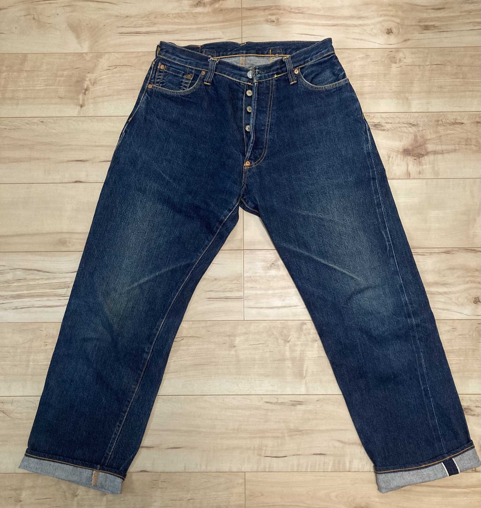
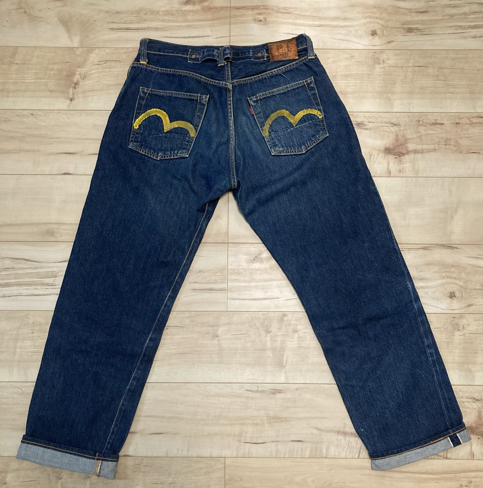
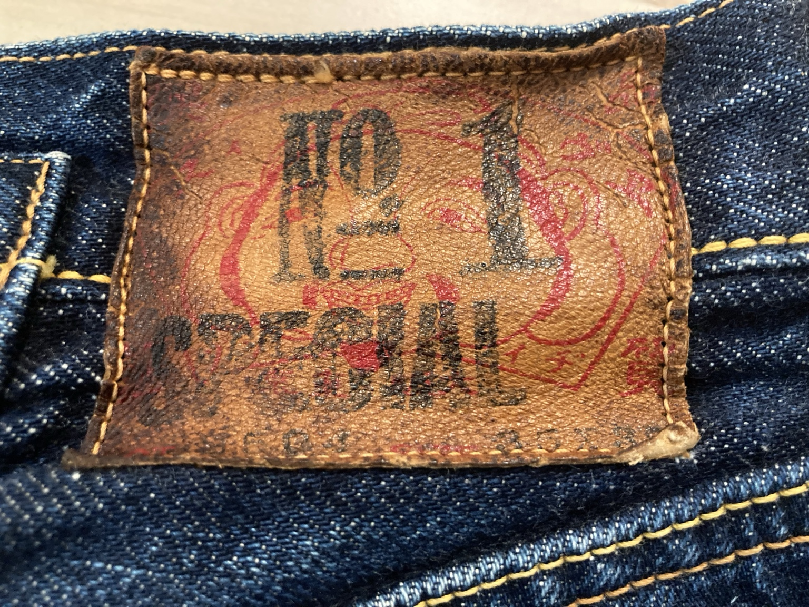
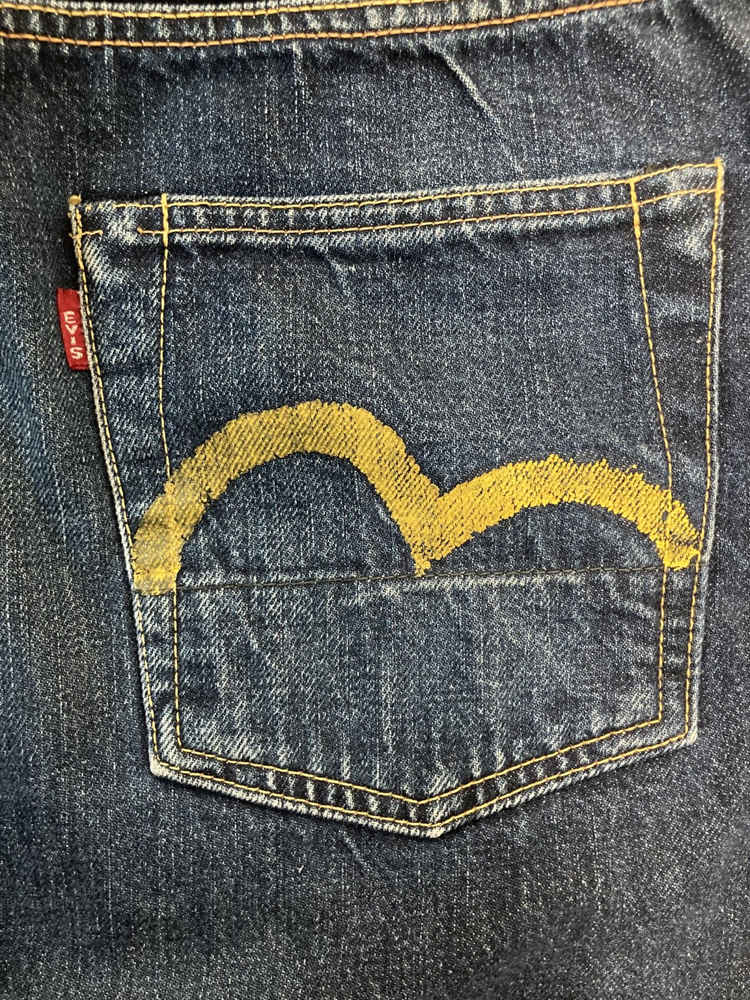
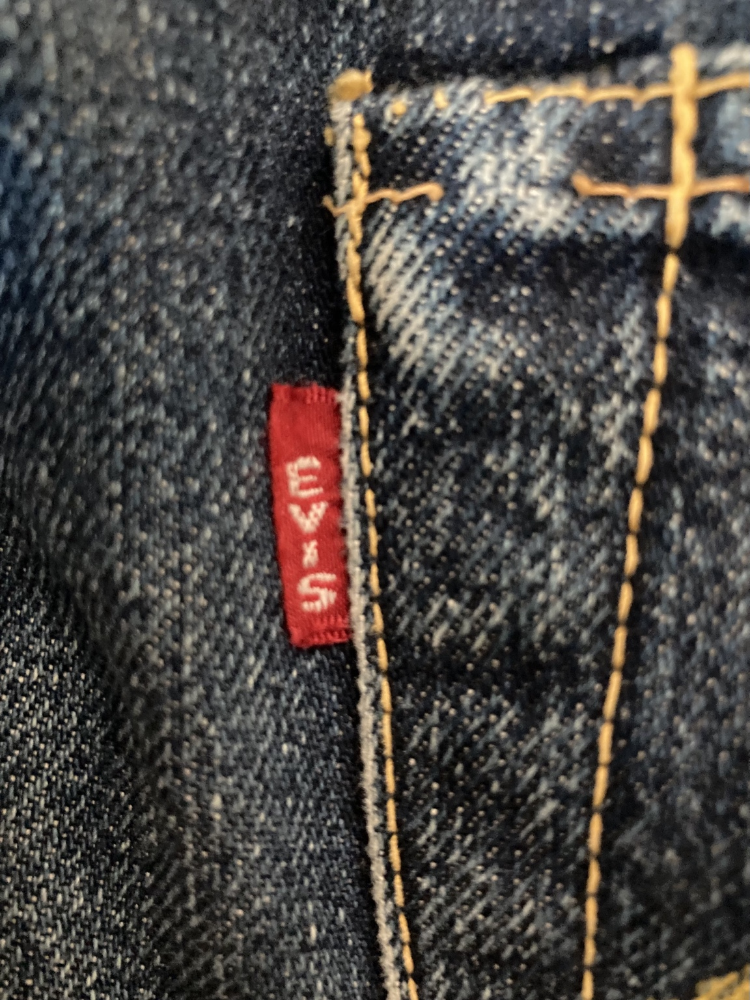

Front

DENIM FADE LAB / EVIS NO.1 SPECIAL
一本全体の表情と、特徴的なディテールを実物写真で残します。
このページでは、所有しているEVIS No.1 SPECIALを、前面・背面に加えて、レザーパッチ、バックポケットの黄色いカモメステッチ、赤タブまで記録します。
年代や細かな仕様については写真だけで断定せず、ここでは実際に確認できる特徴を中心に残します。DENIM FADE LABでは、完成したデニムの色落ちとディテールを、これから育てるデニムの比較資料として蓄積していきます。





写真をクリックすると拡大表示できます。
EVIS No.1 SPECIALは、Levi's 501E・66前期・初期EVIS・Silver Stoneなどと並ぶ「完成したデニムの実物資料」としてVintage Archiveに追加します。新品や濃紺の状態から育てるFADE LOGと見比べることで、時間と着用によってデニムがどう変化するかを考えるための比較材料になります。